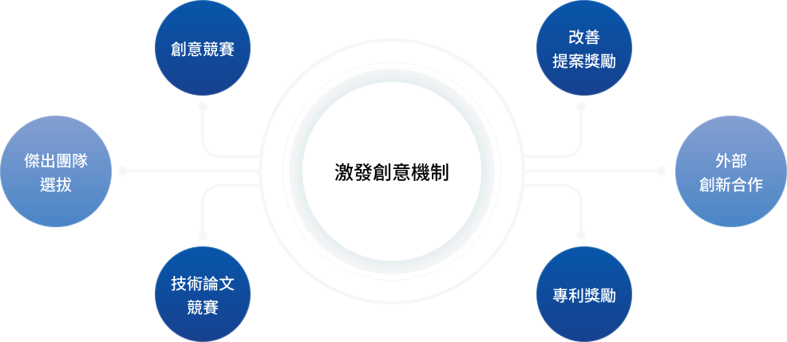
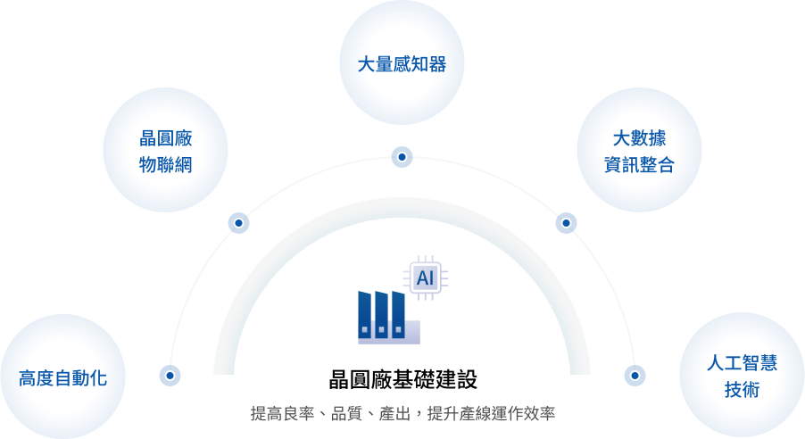
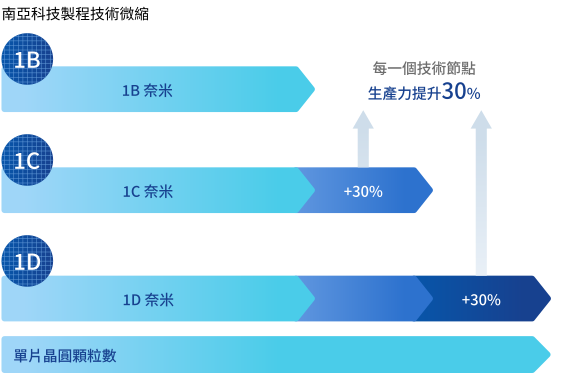
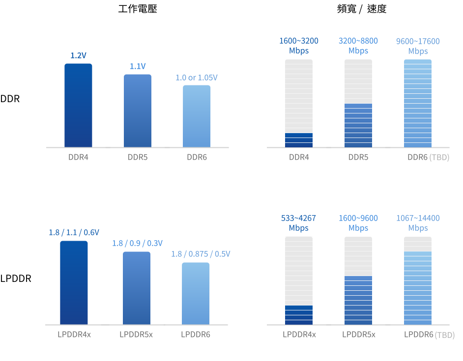

創新 專業創新的最佳記憶體夥伴
「創新」是南亞科技技術成長及競爭力提升的原動力，也是四大核心價值之一。我們將強化產品的研發與製造，滿足客戶多樣化的需求，以成為智慧世代最佳記憶體夥伴。

-
南亞科技重視科技研發
研發經費占營收比率為10.6%
研發人員占員工比率為31.0% 10.6 % -
至2025 年底已累積開發152個人工智慧應用
年效益達新臺幣 4.2 億元 - 2025年專利獲證件數達 919 件
重大議題策略與績效
 研發與創新
研發與創新

在智慧型產品全面改善人類生活品質並協助節能減碳的浪潮下，南亞科技每年投入大量資源在新式DRAM產品、下世代製程及先進三維堆疊封裝等技術的開發上，提供客戶加值型服務，加強智慧財產權與營業秘密的保護，朝產品多樣化與智慧工廠方向加速前進。展望未來，南亞科技將持續致力於開發更先進的第三代、第四代10奈米級DRAM製程技術及DRAM產品，並與策略夥伴補丁科技 (股)公司合作開發客製化超高頻寬記憶體DRAM產品以拓展新興人工智慧AI晶片市場商機。
- 自主研發、生產，推出下世代產品 16Gb DDR5
- 拓展人工智慧市場 開發客製化超高頻寬記憶體
- 先進技術開發 三維堆疊封裝、TSV製程技術

鼓勵創新作法與成果
「創新」是南亞科技技術成長及競爭力提升的原動力，也是核心價值之一，為激勵員工勇於提出創新點子，公司每年舉辦專利獎勵、創意競賽、提案改善獎勵、論文競賽及最佳團隊競賽等創新活動，對於每一位員工提出的創新點子給予肯定及獎勵，期使創新精神內化於全體員工。
- 連續三年入選 科睿唯安「全球百大創新機構」
- 全球累計專利獲證數 > 7,700 件

 智慧工廠
智慧工廠

南亞科技12吋晶圓廠具備智慧工廠所需要的基礎建設，包含產線高度自動化、晶圓廠物聯網、大量感知器、大數據資訊整合平台，並運用人工智慧技術，將應用創新推廣到八個重要應用類別，涵蓋機台預診斷、製程控制、生產力提升、品質檢測、良率分析、製程研發、工安防護、能源管理等。目前已開發出多項產線創新應用功能，包括機台預診斷、先進製程控制、生產排程最佳化、在製品數量預測、智慧搬運、測試針痕檢測、 缺陷影像辨識、良率晶圓圖像辨識等系統，能有效提升產線整體運作效率，在良率、品質、產出三個重要面向上帶來正面效益。
-
至2024 年底
累積開發人工智慧應用 134 個 - 未來五年預期效益達新台幣 20 億
- AI人才培育 500 位

 綠色產品發展
綠色產品發展

南亞科技與客戶共同以保護綠色地球為目標，我們導入生命週期思維 (Life Cycle Thinking, LCT) 與綠色設計 (Design for Environment)。在研發先進及具高效率的環境友善產品的努力上，不僅持續協助客戶開發低耗能設計的產品，也透過對供應鏈的影響力進行危害管理及衝突礦產管理。配合綠色產品推動委員會 (GPPC) 進行綠色產品管理，從新產品開發即考量採購、生產製造、運輸、產品使用與棄置回收等階段的七大環境面向衝擊，鑑別提升環境效益的改善機會。
-
綠色產品設計
DRAM產業身為半導體產業鏈的重要一環，記憶體產品的研發與創新將直接影響計算設備的性能和效率。南亞科技長期致力於DRAM產品研發、設計、製造與銷售，因應技術發展與市場需求，以製程技術微縮、產品規格提升、3D堆疊技術開發等3大研發方向，實現綠色產品。
-

持續開發先進製程技術，提供更省電的綠色產品
- 單片晶圓產能提升 30 %
- 提升產品規格 DDR5/LPDDR5
- 節省客戶使用電力 > 6億1,717 萬度
南亞科技產品規劃與規格演進

請參閱完整報告書內容
閱讀全文
 最新消息
最新消息
 粉絲專頁
粉絲專頁